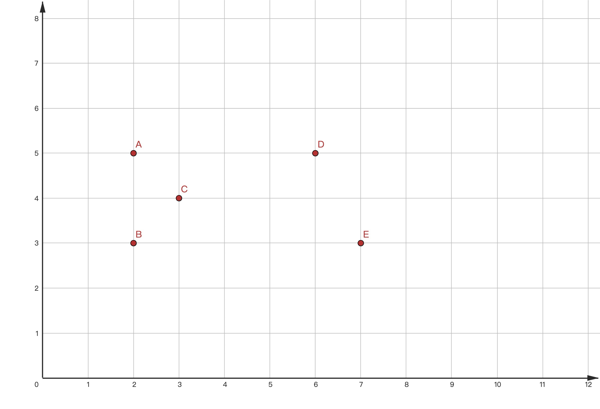
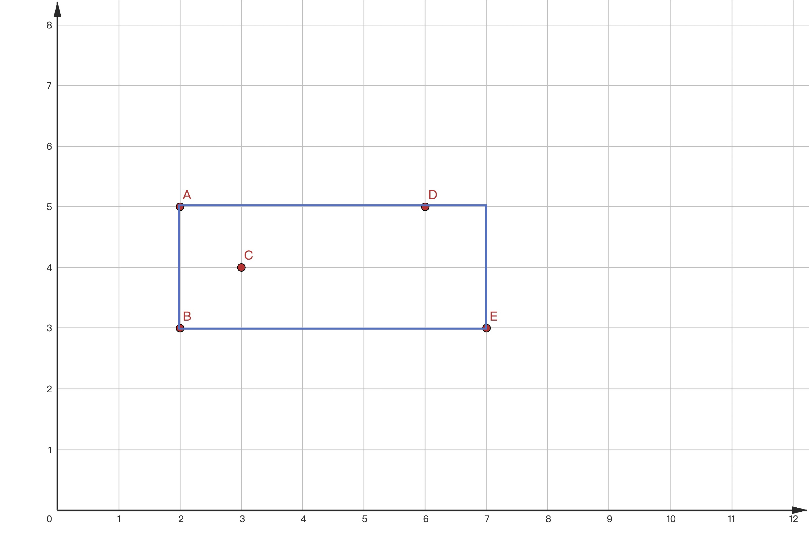
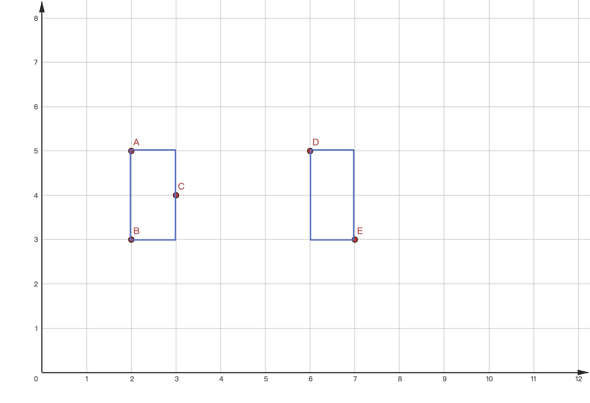

一些来源未知的题目
条评论【货币】Money
题目描述
千百年来, “乌有之乡”一直流通着 $D$ 种不同面额的硬币。
新任”乡长”刚上任, 就颁发法规要求任何一次购买中不得使用超过 $C$ 个同一面额的硬币（无其它限制）。
例如，如果 $C = 2$，且现有的面额为 $1$ 和 $5$,
则可以使用两个 $5$ 和一个 $1$ 购买价值为 $11$ 的物品，
也可以使用两个 $5$ 和两个 $1$ 购买价值为 $12$ 的物品,
但无法购买价值为 $9$ 或 $17$ 的物品。
作为”乌有之乡”的铸币局局长, 你不想违抗新任”乡长”的命令, 所以你希望通过发行新面额硬币, 使得可以合法购买任何价值不超过 $V$ 的物品。
请问, 最少需要引入几种新面额?
输入格式
输入两行:
- 第一行包含三个整数, 分别为 $C$、$D$、$V$, 以空格隔开
- 第二行包含 $D$ 个整数, 表示 $D$ 种已有面额, 按升序排列, 以空格隔开
输出格式
输出一行, 包含一个整数, 表示最少需要引入的新面额的种数。
脚注
测试数据说明
共 100 个测试用例。
单个测试用例最长时限为 C++:100ms/Java:500ms，内存限制为 500000 KiB。
一次提交最长测试时间（不计可能的排队等待时间）为 C++:10s/Java:50s。
$1 \le C \le 100$
- 15 个测试用例满足 $C = 1$
- 40 个测试用例满足 $C < 10$
$1 \le D \le 100$
- 50 个测试用例满足 $D < 10$
$1 \le V \le 10^9$（注意数据范围，选择合适大小的数据类型）
- 15 个测试用例满足 $V \le 100$
- 35 个测试用例满足 $V \le 10^8$
- 约 60 个测试用例满足 $V \le 5 \times 10^8$
- 约 80 个测试用例满足 $V \le 8 \times 10^8$
- 3 个测试用例满足 $V = 10^9$
解题说明（仅供参考，免责声明）
- 维护当前无法合法购买的物品的最小价值
- 假设已知当前无法合法购买的物品的最小价值为 $U$，怎么办呢，局长大人？
样例
#1
1 | 1 3 6 |
1 | 1 |
#2
1 | 1 6 100 |
1 | 3 |
【农场】Farm
题目描述
身为“乌有之乡”铸币局局长，你拥有一片二维平面整数网格状农场，很合理的吧？
你在农场的不同位置养了 $N$ 头牛。为了便于管理, 你计划用矩形围栏 (围栏边平行于 $x$ 轴与 $y$ 轴) 将所有的牛圈起来。注意, 允许牛在围栏的边界或顶点上。
由于经费限制, 你希望围栏围住的面积尽可能小。为此, 你决定建造两个围栏将所有的牛圈起来。
请计算, 与仅建造一个围栏相比, 建造两个围栏最多可以减少多少围栏面积?
注意:
- 两个围栏不允许重叠，边界、顶点处也不可以。
- 允许建造宽度和/或长度为零的围栏, 它们的面积为零。
举例
$ 5 $ 头牛分布在 $A:(2,5)$、$B: (2,3)$、$C: (3,4)$、$D: (6,5)$、$E: (7,3)$ 处。

如果建造一个围栏，最小面积为 $10$。

如果建造两个围栏，最小面积为 $ 4 $，最多减少面积为 $ 6 $。(这是垂直划分方案达到最优的一个例子)

输入格式
输入 $𝑁+1$ 行:
- 第一行是一个整数, 表示牛的数量 $𝑁$
- 接下来 $𝑁$ 行, 每行包含两个整数 (表示每头牛所处位置的 $𝑥$ 坐标和 $𝑦$ 坐标), 以空格隔开
输出格式
输出一个整数, 表示最多可以减少的面积。